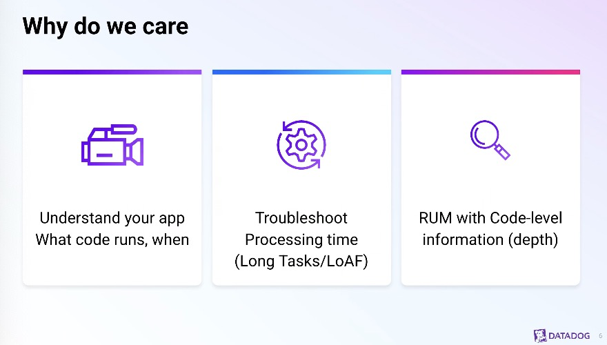
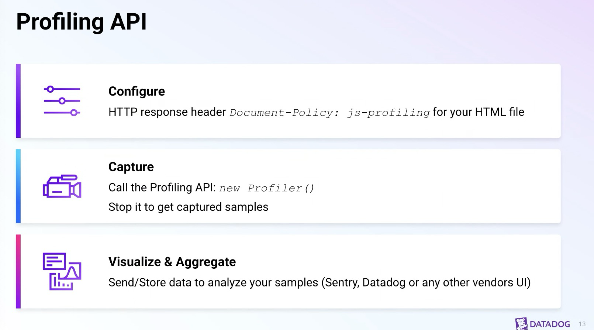
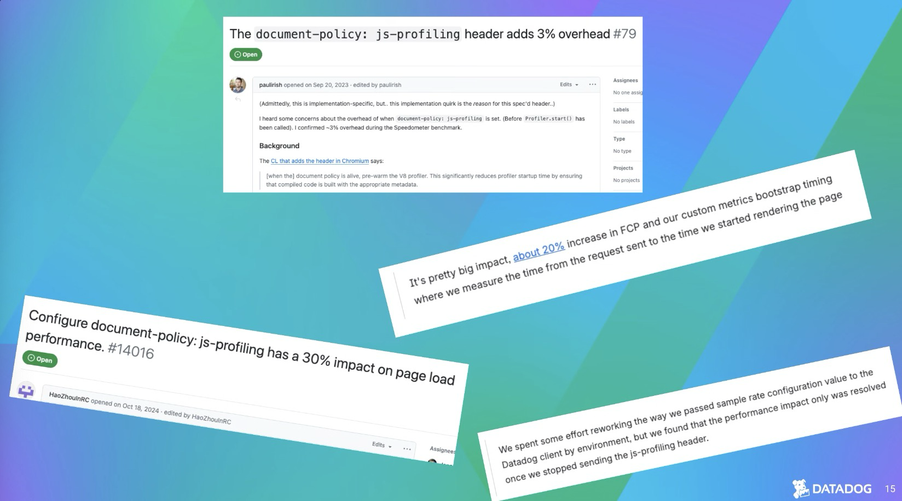
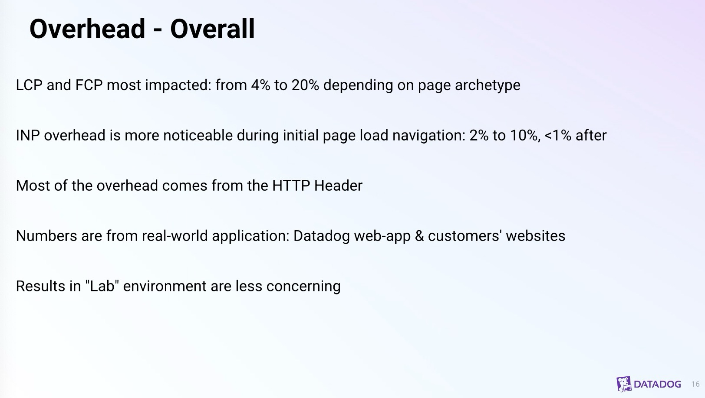
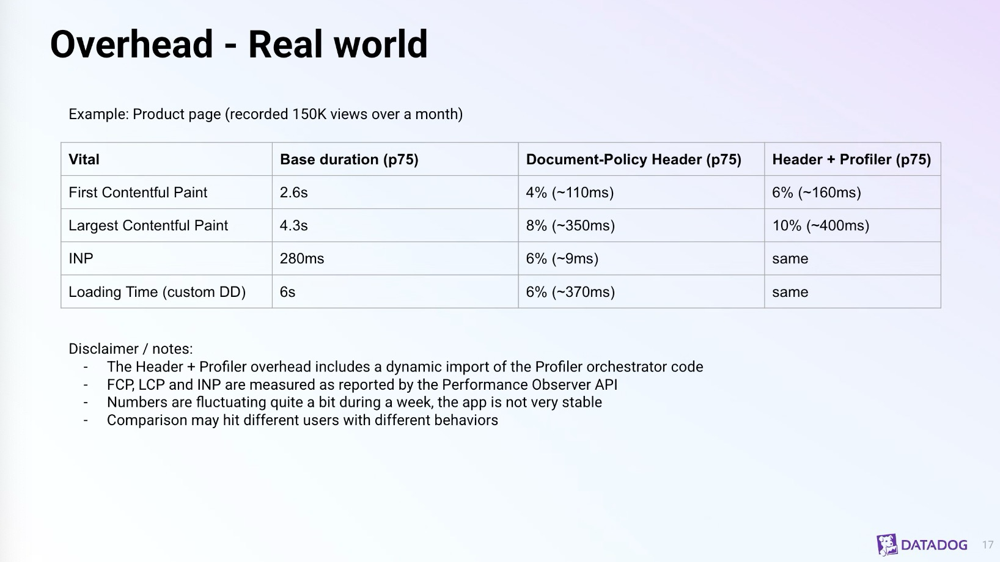
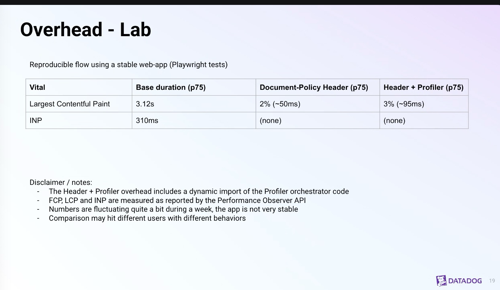
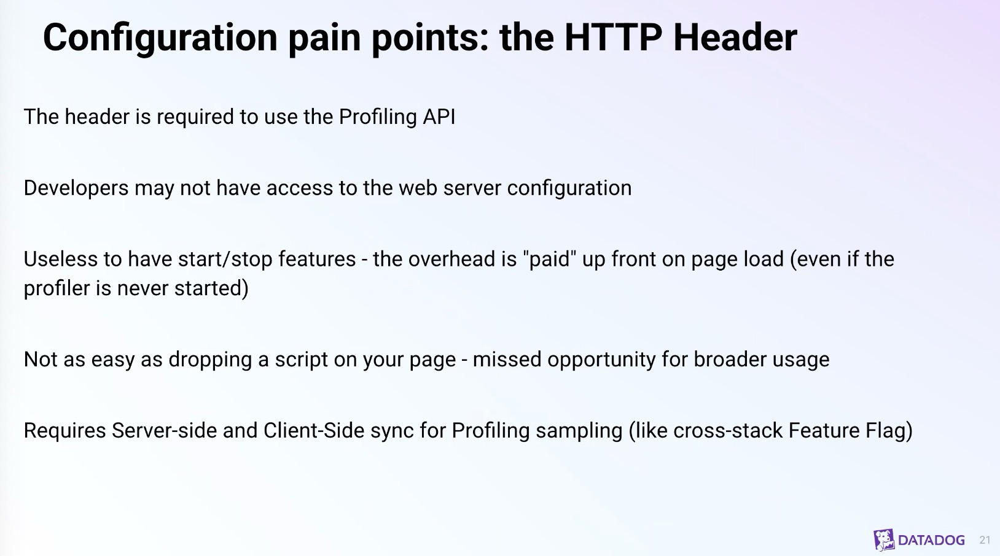
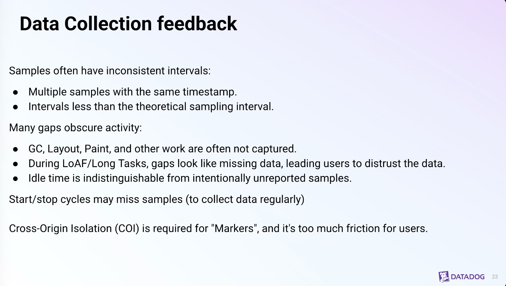
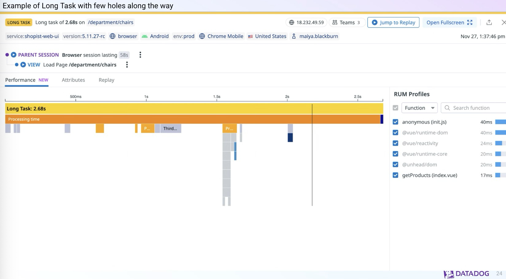
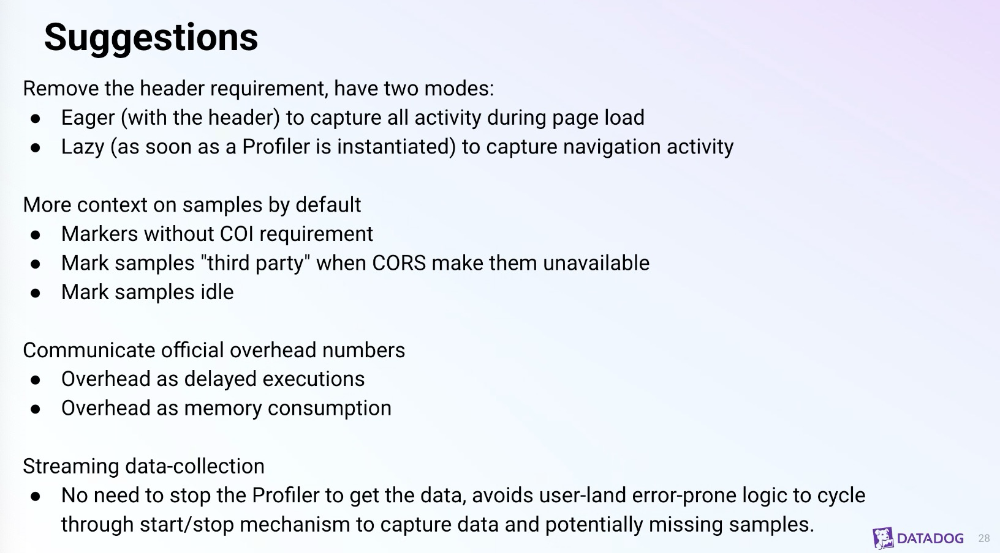

WebPerfWG call - December 4th 2025
Participants
- Nic Jansma, Yoav Weiss, Alex Christensen, Andy Davies, Barry Pollard, Carine Bournez, Dave Hunt, Elad Alon, Guohui Deng, Jennifer Strickland, Noam Helfman, Patrick Meenan, Sigrid Heumer, Thomas Bertet, Amiya Gupta, Jacob Groß, Robert Liu, Joone Hur, Luis Flores, Michal Mocny, Fabio Rocha
Admin
- December 18, 2025 - later time slot
- Why? Spec has a lot of issues, implementation doesn't align. We want to fix privacy issues in the spec.
- Starting next week! Let us know if you want to participate
Minutes
JS Self Profiling - Thomas Bertet
- Thomas: Working at DataDog, front-end engineer
- … Working on profiling part of DataDog web performance platform
- … Project should bring in browser profiling GA in 2026

height: 500.00px; margin-left: 0.00px; margin-top: 0.00px; transform: rotate(0.00rad) translateZ(0px); -webkit-transform: rotate(0.00rad) translateZ(0px);" title="">- … When you want to troubleshoot browser processing time, can't use just LongTasks/LoAF
- … Browser JS Profiling API gives more depth
- … [sample customer/use-case quotes regarding questions around how to diagnose slowness]

height: 894.00px; margin-left: 0.00px; margin-top: 0.00px; transform: rotate(0.00rad) translateZ(0px); -webkit-transform: rotate(0.00rad) translateZ(0px);" title="">- … Recap of JS Profiling API
- … Need to[a][b] set HTTP header, capture with new Profiler(), stop to get samples
- … Overhead what we measured (with a grain of salt)

height: 916.00px; margin-left: 0.00px; margin-top: 0.00px; transform: rotate(0.00rad) translateZ(0px); -webkit-transform: rotate(0.00rad) translateZ(0px);" title="">- … We did measurement at DataDog

height: 918.00px; margin-left: 0.00px; margin-top: 0.00px; transform: rotate(0.00rad) translateZ(0px); -webkit-transform: rotate(0.00rad) translateZ(0px);" title="">- … LCP and FCP most impacted, 4% to 20% depending on the page
- … INP is less of a concern, 2-10% during page load navigation, <1% after
- … Most overhead comes from HTTP Header, so we can profile the whole loading experience, so it's not delayed
- … Comes from DataDog web app, real users
- … Also show some lab results, confined/reproducable environment

height: 920.00px; margin-left: 0.00px; margin-top: 0.00px; transform: rotate(0.00rad) translateZ(0px); -webkit-transform: rotate(0.00rad) translateZ(0px);" title="">- … Overall the overhead we measured is from the HTTP Header
- … Measure for some parts during the day, day-over-day measurements taken, so things may be changing – take with a grain of salt

height: 946.00px; margin-left: 0.00px; margin-top: 0.00px; transform: rotate(0.00rad) translateZ(0px); -webkit-transform: rotate(0.00rad) translateZ(0px);" title="">- … Stable web app to run tests against, controlled environment
- … Best-case scenario
- … 3% delay we measured
- … Lab and real-world experience appear different

height: 906.00px; margin-left: 0.00px; margin-top: 0.00px; transform: rotate(0.00rad) translateZ(0px); -webkit-transform: rotate(0.00rad) translateZ(0px);" title="">- … Pain points: HTTP Header
- … Useless to have start/stop features, the overhead is already paid
- … Why not start profiling right away?
- … Not as easy as dropping a script on the page, a header. Stops broader usage.
- … Synchronizing server-side and client-side. Once you set the HTTP header, you also need the client-side to start.
- … When sampling e.g. 50% of users, you need to sync

height: 926.00px; margin-left: 0.00px; margin-top: 0.00px; transform: rotate(0.00rad) translateZ(0px); -webkit-transform: rotate(0.00rad) translateZ(0px);" title="">- … Pain point: Data Collection
- … Samples have inconsistent intervals, 10ms, 15ms, etc.
- … Many gaps in data you collect
- … GC, layout, paint etc, not captured by API
- … When you have holes in data, gaps, people question the data you collected
- … Confuses people a bit
- … Even if you improve what you see, you're not sure if you're going to have a big impact
- … Idle time is indistinguishable from not being able to capture things (3Ps)
- … Sample without data
- … Markers need Cross-Origin Isolation (COI), none of our customers do that
- … Even we won't do it internally

height: 910.00px; margin-left: 0.00px; margin-top: 0.00px; transform: rotate(0.00rad) translateZ(0px); -webkit-transform: rotate(0.00rad) translateZ(0px);" title="">
height: 904.00px; margin-left: 0.00px; margin-top: 0.00px; transform: rotate(0.00rad) translateZ(0px); -webkit-transform: rotate(0.00rad) translateZ(0px);" title="">- … Suggestions
- … Would like to remove header requirement
- … More context on samples, e.g. markers without COI requirements
- … Communicate official numbers of overhead would be nice
- … Streaming data-collection, no need to start/stop data
- Noam: Overhead, we integrated profiler a couple years ago (Excel online), we measured it extensively, and we didn't see numbers as high as you've described, almost insignificant for us
- … However maybe that's not representative of user devices and clients, and could affect impact. For our customer base, overhead was almost insignificant.
- … Breakdown the overhead by device type? Worth analyzing
- … Markers, there has been work by Edge team to provide markers w/out COI requirement, but only for styling and layout
- … Security review to make sure it doesn't leak information. Plan is at some point to enable. Experimental now, you can try playing with it.
- … How you use the data, start/stop streaming. When we started, main overhead was not profiler itself, but processing the data it produces. Even if we do processing on worker, we're not collecting all the time, it's sampled, a couple of seconds every few minutes.
- … We're not trying to build flame charts, we did that initially, but we quickly switched to only analyze in aggregate. Cross all of the samples we have by count tree instead of time, with interesting periods we're interested in, like EventTiming. Correlate with slowness during interactions. Points more to root cause for debugging.
- Sigrid: From Sentry, working on profiling part in Sentry SDK. Empathize, two points that would be beneficial for Sentry.
- … Markers would give a lot of insight into where experiences are coming from. E.g. from garbage collection or layout changes.
- … Working spec on Github, but I'm not sure if it's still actively maintained. It would be awesome to see if that's implemented.
- … Other thing, HTTP header. We would like to not have this requirement of the header.
- Yoav: On header front, if there was a start/stop without header. I'm guessing, higher overhead for actual profiling, but regardless of that, how would you use it?
- … Are you sampling? How does start/stop work?
- Thomas: The way we implemented it is you have sampling controlled and shared between backend and frontend, it's not as important to sample from very start of page load. Customers are more concerned about first loading time to be bigger than before.
- Yoav: You would start profiler after first load is "done", then it won't impact those metrics, and it'd give you insights later on.
- Thomas: Yes. Start profiler when they see some pattern in the UI, only start it then
- … But they've paid the overhead before
- Michal: I don't know implementation deeply, investigated header requirement surface level. Two requirements: eager vs. lazy. Header opts into eager mode, too eager as it affects loading performance.
- … I think it makes sense to move that further
- … Not much impact on INP now. But I think that's because of this eager mode, if we change policy
- … Perfect mode you have lazy until idle period, then you start it before interactions
- … Header opts into eager mode when you're in the most important part of page load
- … Second thing I think is important is an opt-in signal from page that anyone can start loading
- … Another opt-in mechanism? Change default to when header is lazy.
- Yoav: Makes sense for how Origin Trials, it would have to be a first-party script, or page with metadata to opt-in to this.
- … Page delegates ability to turn on from certain scripts
- … Would an in-HTML opt-in be easier than a header, or not
- Thomas: We mostly manage to get people to add the header
- … Friction point, but we manage
- Sigrid: In meta frameworks it's easy to add HTML or header, since you control both
- … But when backend needs to change something, it's harder to add header than HTML
- Pat: Coordinating between client and server, header and JS
- … If we go something like where Michal is going with header on all the time
- … When you instantiate the profiler it starts it.
- … If we make it able to instantiate profiler without starting, maybe the lazy trigger
- … Then no weird coordination out of band
- Nic: document policy is that opt-in
- … maybe split the opt-in from a way to kick off profiling
- … different mechanism than what we have today
- Noam: Being able to profile during boot-time is important, if we change default to completely lazy we stop that ability
- … boot time profiling adds overhead, so we'd only do that for sampled set of users
- … I wouldn't switch to only-lazy or only-eager be able to control it
- Yoav: Changing default doesn't change all options
- Michal: Difference is do you bear the brunt of preparing for profiling every time
- … Start a profiler to wrap that, do you pay additional cost to profile instantiate and make that one part of the journey slower
- … Or do you do that ahead of time?
- … For load you're going to pay for cost ahead of time, so you're later to start profiler, and now it's faster once you do
- … I do think it'd be nice, like Patrick mentioned, that you could detect it's supported, and start the hot-path so when you need it for interactions, it's ready to go
- Yoav: JS options for initialize vs. start
- Michal: Maybe start/stop does that?
- Yoav: Want to initiate when not something important happens, out of load path
- Noam: Unless load sequence is what you're interested in measuring
- Sigrid: Header is required in all cases right now, is it needed?
- Michal: Header is for security requirements, pages can opt-in to 3P Origin Trials, using new features, but it's not supposed to have a negative impact
- … Any JavaScript can run a long loop and tank performance
- … Perhaps a needless protection
- … On the other hand, just a Profiler can slow things down, site-owners can decide if this session is allowed to opt-into this feature
- … So defaults need to be tweaked
- … Toggle lazy mode which has some advantage
- Yoav: I wouldn't call it a security opt-in
- … You want to ensure alignment between site-owner and script running profiler
- … You want your perf analytics script to do that, not an ad script doing that
- … Site owner may not want to enable that
- Thomas: Next steps?
- Michal: Eager mode by default with header is wrong default
- … Changing header to be eager vs. lazy?
- … I would allow lazy mode by default, if you could evaluate overhead, Origin Trial or something
- … Maybe eager mode is opt-in through some other mechanism?
- Yoav: I believe the main blocker for improvements to this API is implementor bandwidth
- … Edge team has experimented with some things around Markers without COI
- … Maybe these various changes being discussed could be easier?
- … Changing way opt-in and initialization works could be easier?
- … Would Edge folks be interested in taking over implementation and pushing it
- … AI to follow-up with Edge team
- Noam: I can follow-up with them on Markers and proposal for this
- Yoav: AI to open a Github issue to discuss what that policy change may look like, and we can chime in there and see where we land
- Michal: I think hardest part is to figure out existing users and make sure we don't break them
- Nic: Maybe there's a separate Document-Policy option for eager vs. lazy
- Noam: I think there's just an preference to control it
- Yoav: Different Document-Policy would be good for compat perspective
- … Who is using API? Used as third-party. Sampled. Counts top-level origin as user, but the usage is driven by 3P.
- Pat: Could scan HTTP Archive for "new Profiler()" in JS bodies and see what scripts are using it
- …
- Michal: Code-caching can be disabled when Profiler is started
- Noam: Code-caching itself can depened on how you structure your resources
- … In Excel we don't always benefit from it
- Yoav: If you're deploying 100x a day, you'll bust cache vs. more stable scripts
[b]https://docs.google.com/document/d/1In_R1c534PJQx0wU-ZYQK5bw9wsCZMRDPoEzRjScwWk/edit?usp=drivesdk&disco=AAAB0MuN24Y